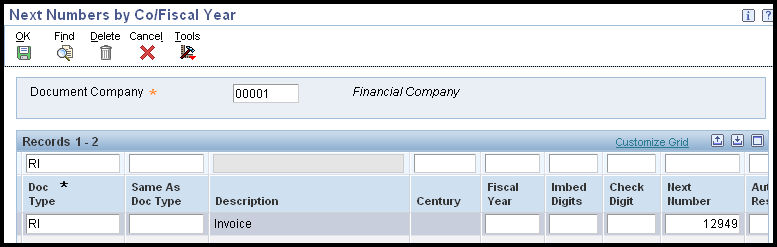

This document is an overview of Accounts Receivable Next Numbers Setup within Oracle JD Edwards EnterpriseOne Financial Management system.
Scope
This document is intended for EnterpriseOne users who are setting up the Accounts Receivable module for use within their organization.
Details
Setting Up Accounts Receivable Next Numbers (P0002)
When you create a document such as an invoice, a voucher, or a journal entry, you can assign a document number to uniquely identify the document or let the Next Numbers program (P0002) assign one. If you choose to manually assign a document number instead of using next numbers, you must enter the number during data entry. Next numbers is an automatic numbering utility. The Next Numbers program assigns numbers to documents using one or both of these:
Standard next numbers. The system finds the next available number in the Next Numbers - Automatic table (F0002) and assigns that number to the document.
Next numbers by company and fiscal year. The system finds the next available number by company and fiscal year or by company only in the Next Numbers by Company/Fiscal Year - Automatic table (F00021).
Follow these rules when you work with next numbers:
Do not use blank as a next number value.
Do not change a next number. Changing the numbers can result in duplicate numbers, as well as the inability to locate previously added numbers. If you must change a next number, change it to a greater value only.
Do not delete next number values. If you delete a next number value, you might get unexpected results.
Do not change the sequence of the next numbers in the table. Next numbers work in conjunction with the data dictionary. Each data dictionary item that uses next numbers contains a next-numbering index value that corresponds to the line number that contains the next number value for that data item. Each next number must remain on its current line because programs reference a specific line in the table. For example, in the General Accounting system, the next number for journal entries must be on the second line.
You can have the system assign check digits for any set of standard next numbers. The check digit feature prevents errors that are caused by transposition during data entry. For example, activating check digits in the address book for suppliers prevents a voucher from being assigned to the wrong supplier if digits are transposed during voucher entry. Use check digits for next numbers only when a transposition error is likely to occur during data entry.
Next Numbers By System
To access system next numbers, you can use fast path 'NN' or navigate to Next Numbers (P0002). Next select the system in which to set up next numbers, i.e. 03B for "Accounts Receivable", 04 for "Accounts Payable" or 09 for "General Ledger".
Next Number - Enter the number that the system will assign next. The system can use next numbers for voucher numbers, invoice numbers, journal entry numbers, address numbers, and so on. You must use the next number types that are already established (and located under the Use column) unless your company provides custom programming.
Chk Dgt (check digit) - Select to specify that the system add a number to the end of each next number that is assigned. For example, if you are using check digits and the next number is 2, the system will add a check digit such as 7, making the last two numbers 27. The check digits option provides a method for increasing numbers randomly to prevent the assignment of transposed numbers. In this example, the system would never assign next number 72 with check digits activated.
Next Numbers by Company and Fiscal Year
The system can assign a unique set of next numbers to invoices and other documents for a specific company and fiscal year. This is helpful if your organization needs to have a consecutive document number for each company by fiscal year. This section lists a prerequisite and discusses how to:
Select a method for next numbers by company and year.
Set up next numbers by company and year.
Add a fiscal year to an existing record.
Remove a fiscal year from an existing record.
Selecting a Method for Next Numbers by Company and Fiscal Year
Next Numbers by Company and Fiscal Year are controlled by the Next Number Constants. To access Next Number Constants, you can use fast path 'NN' or navigate to Next Numbers (P0002). Take the form exit 'NN Constants' and select the option to implement next numbers by company and fiscal year (method 1 or 2).
Method 1 -Implement next number by company/fiscal year. If a company record is not set up for a document type, a next number will be created and the next number will default to '1'.
Method 2 - Implement next number by company/fiscal year. If a company record is not set up for a document type, the standard next numbers set up will be used.
NOTE: If method 1 or 2 is already selected on the Next Numbers Constants form and next numbers by company or document already exist, you must delete the next numbers before you can change the method. Changing the method and next number set up once a system is live may cause unexpected results and is not recommended.
Set Up Next Numbers by Company and Fiscal Year

Once a method for Next Numbers by Company/Fiscal Year has been selected, you need to set up the next numbers (NN). To set up next numbers by company and fiscal year, take the form exit 'NN by Co/FY' from Work with Next Numbers (P0002). Enter document company in the header and click 'Find' to display any existing records. To add a new NN line, go to bottom of the grid and enter the following in the first blank line:
Document Type - Enter a value from user defined code (UDC) table 00/DT that identified the origin and purpose of the transaction.
Same As Doc Type (same as document type) - If you set up next numbers by company or by company and fiscal year, a document type can share the same next number sequence as another document type. For example, you create a recurring invoice (document type RR). The recurring invoice that you create should use the same next number sequence as regular invoices (document type RI). In this example, you would set up the document type RR with a same as document type of RI. Enter a value that identifies a document type in user-defined code (UDC) table 00/DT.
Fiscal Year - A number that identifies the fiscal year. Generally, you can either enter a number in this field or leave it blank to indicate the current fiscal year (as defined on the Company Setup form (P0010)). Specify the year at the end of the first period rather than the year at the end of the fiscal period. For example, a fiscal year begins October 1, 2011 and ends September 30, 2012. The end of the first period is October 31, 2011. Specify the year 11 rather than 12.
Imbed Digits- Enter the number of digits that the system imbeds in a document number to represent the fiscal year. Imbed digits apply only to next numbers by fiscal year. Values are:
1: Imbed one digit.The last digit of the fiscal year will be imbedded in the first position of the resulting document number. For example, in 20012345, the first digit represents the last '2' from 2012, and the remainder of the number (0012345) is the next number.
2: Imbed two digits. The last two digits of the fiscal year will be imbedded in the first two positions of the resulting document number. For example, in 12012345, the first two digits represent the 12 from 2012, and the remainder of the number (012345) is the next number.
Check Digit - An option that specifies whether the system adds a number to the end of each next number assigned. For example, if you are using check digits and the next number is 2, the system will add a check digit such as 7, making the last two numbers 27. The check digits option provides a method for increasing numbers randomly to prevent the assignment of transposed numbers. In this example, the system would never assign next number 72 while the check digits option is activated. Enter a check digit to use this option or leave blank if not required.
Next Number - The number that the system will assign next for the specified document type/document company/fiscal year.
Auto Reset - Enter the number that you want the system to use when resetting next numbers for a new fiscal year. The system begins next numbering for a new year with the number that you specify. Auto reset applies only to next numbers by fiscal year.
If a company record is not set up for a specific document type, the results vary, depending on the method selected on Next Numbers Constants, as follows:
If you are using method 1, the system creates a record for each company that you do not set up and starts numbering with 1 for all companies.
If you are using method 2, the system uses the starting number shown on Set Up Next Numbers by System (standard next numbers) for each company that you do not set up.
Adding a Fiscal Year to an Existing Record
To add a fiscal year to a record that already exists for a company with no fiscal year defined, you must delete the existing record on the Next Numbers by Co/Fiscal Year form. Then add a new record for the company and include the fiscal year.
Removing a Fiscal year from an Existing Record
To remove a fiscal year from an existing record for a company and fiscal year, you must delete the existing record on the Next Numbers by Co/Fiscal Year form. Then add a new record for the company, but do not include the fiscal year.